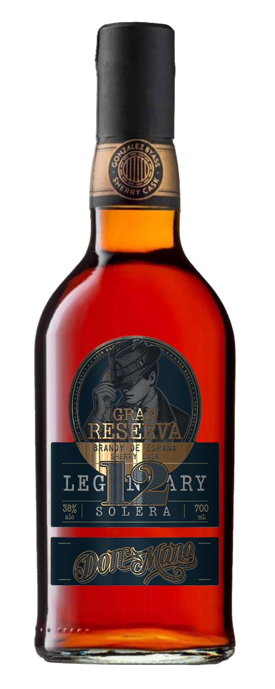
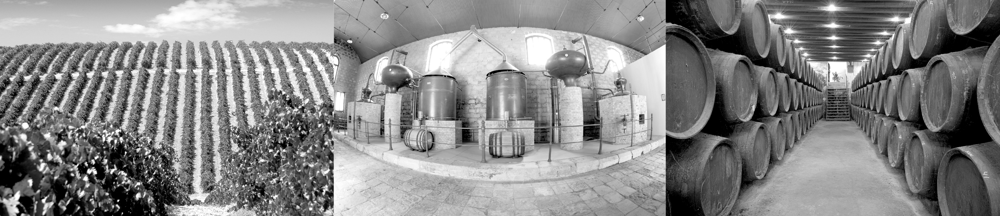

DON MANO
SOLERA 12 YEARS
Type: Solera Gran Reserva
Denomination of Origin: Brandy
Grape Variety: 100% Airen
Ageing: Aged in the solera-criadera system for 12 years.
ABV: 38% vol.
Non-alcohol Coefficient: 250 mg/100 ml a. abs. pure alcohol
Dry extracts: 20 g/l.
Residual sugars: 17 g/l.

GET PDFDISTILLATION:
Our Brandy Don Mano 12 is made from holandas obtained by the distillation of wines. Using the Airén grape variety grown in the La Mancha region located in central Spain. These wines are distilled in modern copper and steel column stills at the González Byass distillery in Tomelloso (Ciudad Real). During distillation the Master Distiller selects the central part or the heart of the spirits known as holandas which is the best quality “aguardiente”. These holandas are characterized by being very aromatic, with fruity, floral and spicy notes. They are immediately sent to the González Byass wineries in Jerez, Andalusia, where they will be aged or matured.
AGEING
Don Mano holandas are aged in American oak casks with a capacity of 600 litres that have previously contained Sherry wine for at least three years. Maturation is carried out in the traditional solera-criadera system for at least 12 year, thus obtaining our Brandy Solera Gran Reserva Don Mano 12’s distinctive colour, aroma, fragrance and pleasant taste.
MASTER DISTILLER’S COMMENTS
Due to its 12 years of ageing in casks previously containing sweet Oloroso Sherries, our Brandy Solera Gran Reserva Don Mano 12 features an elegant mahogany colour with intense amber and copper hues. On the nose it is intense and complex, perfectly blending oak wood, lacquer, nut and caramel aromas with balsamic scents along with mellow and roasted notes. On the palate it is round, tasty and very velvety, with an intense and elegant final aftertaste.
